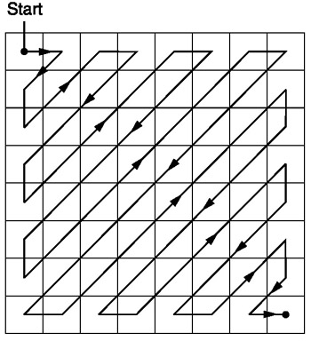
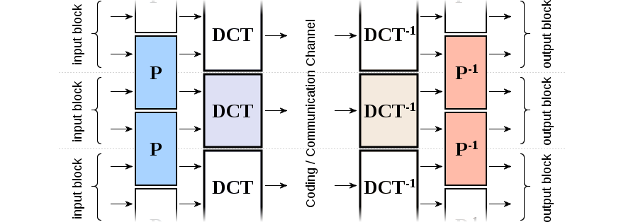
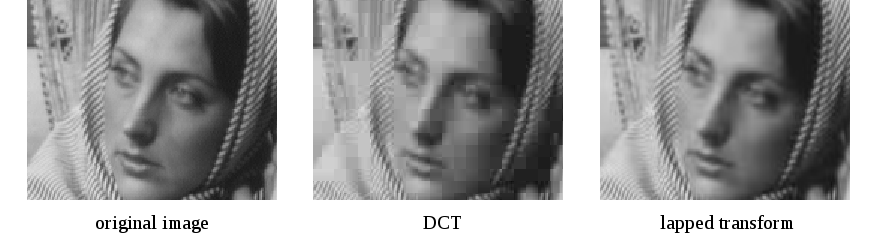
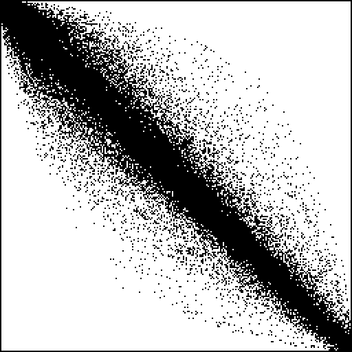
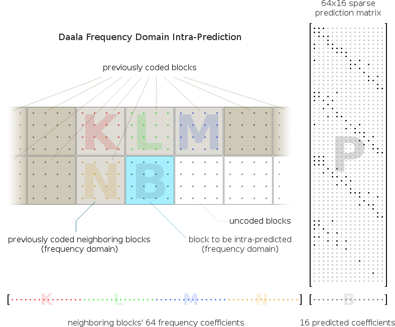

Using Daala Intra Frames for Still Picture Coding
Get better quality, in fewer bytes
What Is Daala?
A video codec created to either match or exceed the quality of current-generation of video codecs, such a VP9 and HEVC. Currently an ongoing effort by Xiph and Mozilla to introduce a royalty-free video codec.
Problem: Compressing Images
LZW, RLE, ZIP, etc. work great...
(Behind, you're seeing a 512 by 512 pixel image, not just a white background)
| Image | Size (bytes) |
|---|---|
| BMP | 786554 |
| PNG | 1529 |
| JPG | 3598 |
Except not so well for more complex images
| Image | Size (bytes) |
|---|---|
| BMP | 786554 |
| PNG | 476235 |
| JPG | 408932 |
Even worse for noise
| Image | Size (bytes) |
|---|---|
| BMP | 786554 |
| PNG | 788485 |
| JPG | 770446 |
Solution: Fool the Human
Humans are very forgiving for loss of some quality
Let's Look At JPEG
What Does JPEG Do?
-
Spatial to frequency conversion
- similar to audio but for images, and instead of 1D, we use 2D
-
Fourier's Theorem
- “A wave is the sum of many sinusoidal waves.”
- DFT is often used to extract the sine waves of a wave (FFT for the fast variant)
-
But we're going to use the DCT
-
Benefit over DFT
- no complex numbers involved
- wave coefficient packed closer to lower frequencies
-
Benefit over DFT
|
Before DCT |
After DCT |
The block prior to the DCT: spatial domain. the block after: frequency domain
N.B. The top-left pixel in the frequency domain is called DC, and the rest are called AC
|
Before Quantization |
After Quantization |

Run-Length-Encoding (RLE)
We Send This
|
Before Loss |
After Loss |
However, most modern encoders pretty much use a variation of JPEG
A contender: Daala
Lapped Transform
Before we go ahead and use the DCT, we apply a pre-filter
We then overlap the results of the pre-filter onto the DCT


Paper regarding the lapped transform
Gain-Shape Quantization
A type of vector quantization
Vector quantization
Instead of quantizing every scalar elements individually, group adjecent ones and quantize collectively
|  |
Problem: lost information + squandered range
All quantized regions are used
Gain-Shape Quantization
-
Given a block, we treat it like a vector
- Let's call it \mathbf{v}
-
Given \mathbf{v}, we get
- The length (gain), which we will call g
- The direction (shape), which we will call \mathbf{w}
- We then quantize g and \mathbf{w}
Pyramid Vector Quantization
- Instead of look-up tables, arithmetically group vectors
- Saves space
We have a function G to derive G(g) = k, k \in \mathbb{N}
With k, we get a W \subset \mathbb{Z}^N such that \forall \mathbf{v} \in W (\sum\limits_{v}^{\mathbf{v}} |v| = k)
We then have a function Q, such that we can compute Q(\mathbf{w}|k) = \mathbf{q}, \mathbf{q} \in W
Fischer, T.R. "A pyramid vector quantizer." IEEE Transactions on Information Theory. Issue 4 Volume 32 (1986): 568—583. Print.
Removing Pixels
Prediction

Let's Also Compress Colours!
- Humans don't notice colours as much
- And even then, colours are 3D; you're practically sending the same image three times if you send RGB; better to distinguish chroma from luma
- Use YUV
Chroma From Luma Prediction
We compute a \alpha_u, \alpha_v, \beta_u\beta_v, by performing a linear regression on the U and V channels
We can then send \alpha_u, \alpha_v, \beta_u\beta_v, and the decoder should be able to infer the final colour
- DC_u = \alpha_u + \beta_uDC_y
- AC_u[x, y] = \beta_uAC_Y[x, y]
- DC_v = \alpha_v + \beta_vDC_y
- AC_v[x, y] = \beta_vAC_Y[x, y]
Paint Deringing
- Direction search
- Boundary pixel
- Painting
Algorithm on finding the direction
Some Fun
Enough fun; let's ask "to paint or not to paint"
w = \min(1, \alpha\frac{Q^2}{12\sigma^2})
- Q is the quantization amount (quality)
- \alpha is a tunable value between 0 and 1
- \sigma^2is the mean squared distance between decoded image and painted image
The end-result
https://people.xiph.org/~xiphmont/demo/daala/update1-tool2b.shtml